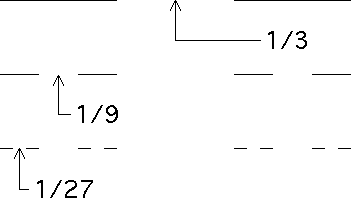

We begin by computing the lengths of the intervals removed in forming the Cantor set.
|  |
| The lengths of the gaps for the first three stages of the Cantor middle thirds set. |
| stage | number of intervals removed | length of intervals removed |
| 1 | 1 | 1/3 |
| 2 | 2 | 1/9 = 1/32 |
| 3 | 4 = 22 | 1/27 = 1/33 |
| 4 | 8 = 23 | 1/81 = 1/34 |
| in general | ||
| n | 2n-1 | 1/3n |
The total length removed is
The series in brackets is a geometric series with ratio 2/3, hence its
sum is
The length of the intervals removed is 1, the length of the initial interval. Consequently, the Cantor set cannot contain any intervals.
This is the essence of the proof that the Cantor set has (1-dimensional Lebesgue) measure 0.
Some people think Cantor created this set to give an example of an uncountable set with zero measure. However, he first used this set as an example of a set containing no intervals and for which every point is a limit point. The following year he published the result that this is an uncountable set of measure zero.